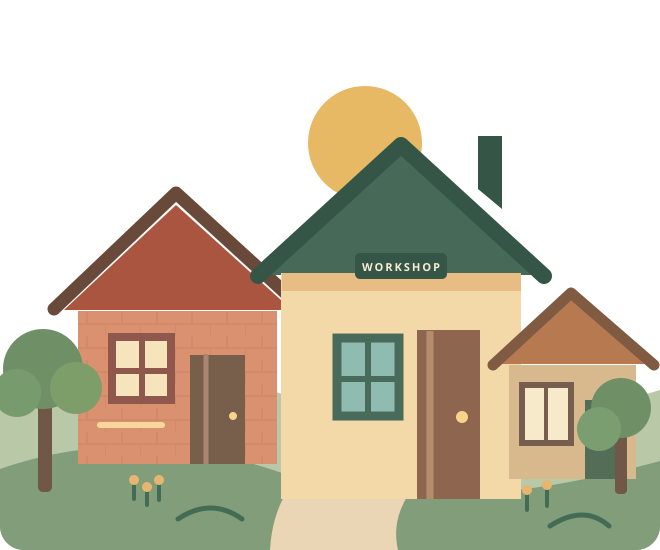

Show what you can do.
A workshop of your own to share your skills, your work, and the story behind it. Real ability matters more than prestige.
A home for independent minds, capable hands, and people building their own way forward. Come as you are. Grow into what you can become.
Our doors are just opening.
One founding workshop. A village still taking shape.

Too many talented people are overlooked because they lack a title, a connection, or the perfect résumé. We want to make another way possible.
A workshop of your own to share your skills, your work, and the story behind it. Real ability matters more than prestige.
Find collaborators, mentors, and people who understand why you're making your own path.
Learn, experiment, and find opportunities without chasing attention or paying for visibility.
Talent is everywhere.
Opportunity should be too.
The village should reward contribution, not attention.
Every village starts somewhere. Here's the first space taking shape.
Software development, automation, technical problem-solving, and turning ambitious ideas into something real.
Step inside the workshopWe're building in public, starting small, and inviting thoughtful people to help shape what this becomes.